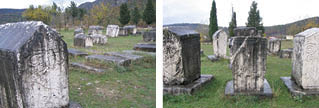
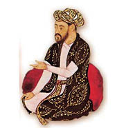

Bir Sahte Vasiyet Varmış Yüzlerce Sahte Fetva Vermiş
Dünya İmparatorluğu Roma’nın ilk Hıristiyan hükümdarı olarak Hıristiyanlık âleminin kurucu lideri sayılan Büyük Konstantin’e atfedilen ve “Konstantin’in Bağışı” diye bilinen sahte vasiyet, 754 yılından öteye sadece ismiyle anılıyordu. Papalar ve yakın çevresinin kulaktan kulağa bir duaymışcasına fısıldayarak sakladığı cismini, ruhban sınıfı dahil kimsecikler görmediği gibi; varlığı da Papalığın hiçbir resmî yazışma, ferman ve fetvasında 9. yüzyıla gelinceye kadar yer almadı.
Komplo, geçmiş ve gelecek tarihin en başarılı sahtekârlığı olup zekice değil, dâhiceydi!
Binyıllara dayanmak üzere bir yalan inşa ediliyor, vasiyetin varlığı, yüksek sesle söylenirse büyüsü kaçacak kutsal bir sır gibi fısıltıyla yayılıyor; belleklerde Batı Roma’yı Doğu Roma’nın, Latin Hıristiyanlığı Grek Hıristiyanlığının boyunduruğundan kurtaran mucize olarak yer etmesi sağlanıyordu.
Söylentisi bile Papaların mülk sahibi olarak devlet kurmalarına, tanrısal üçlünün yeryüzündeki meşru temsilcisi oldukları iddiasına, sözlerinin kanun sayılmasına, imparator ve krallara taç giydirecek konuma yükselmelerine yetmişti.
Bir yüzyıl süreyle dilden dile, kulaktan kulağa huşuyla mırıldanarak eskitile eskitile “gerçeklik” kazandırılan yalan Vasiyet’i, artık yazılı kayıtlara geçirerek resmileştirmenin zamanı gelmişti.
Ama Roma Kilisesi’nin strateji ve taktikte kuşaktan kuşağa aktardığı kadim öğretisinin altın kuralı “sabır”, gümüş kuralı hiçbir işi aceleye getirmemekti.
Beklenen fırsat, 833 yılında doğdu.
Şarlman’dan sonra Avrupa İmparatoru tacını giyen Frank kralı, “Kalender” lakabıyla anılan Louis, kendi oğulları tarafından tahttan indirildi. Kalender Louis’nin (Germenler için Birinci Ludwig) azlinde Roma Papalığına bağlı ruhban sınıfının epeyce etkisi olmuş, piskopos ve başpapazların yarısı oğulların safını tutmuştu. Ne var ki çarkıfelek birkaç ay sonra devrik imparatorun lehine döndü ve Kalender Louis, yeniden tahta çıktı. Elbette ki kendisine komplo kuranlardan öç alacaktı.
Bir önceki hamlede “hain” oğulların safında yer alan Fransa Kilisesi yönderlerinden Lyon, Reims ve Amiens piskoposları görevlerinden azledildi, biri hapis, diğer ikisi sürgün edildi.
Devrik piskoposların ruhban işbirlikçileri, sıra bize geliyor, diye titremeye başlamışlardı ki, Fransa’nın Reims Kilisesi’ne bağlı bir manastırın dehlizlerinde, Roma’nın ilk Hıristiyan imparatoru Konstantin zamanından beri kayda geçmiş oldukları iddia edilen “antika” Papalık fetvaları bulundu.
Tamamen uyduruk Isidorus Mercator isimli bir İspanyol Piskoposun toplayıp arşivlediği öne sürülen 60’a yakın fetvada, Konstantin’in sahte vasiyeti Donatio Constantini’ye de ilk kez yazılı atıf vardı!
Fetvaların, tıpkı Konstantin’in sahte vasiyetinde referans olarak kullanılan Papa Silvestro’nunkilerle başlayıp Papa İkinci Gregorius zamanına kadar gelip geçen Papaların hükümleri oldukları öne sürülüyordu.
Başka bir deyişle 314 ile 731 yılları arasındaki kutsal ve tartışılmaz Papalık kararlarıydı güya bu fetvalar ve elbette tüm zamanlar için içtihat oluşturuyorlardı.
Sahte hükümlerin dayanak noktası elbette Konstantin’in sahte vasiyeti olup içerikleri de vasiyete konulması bir yüzyıl önce düşünülmeyen en önemli eksiği gideriyordu: Ruhban sınıfının dokunulmazlığı!
Tezgâhın kısa vadedeki amacı, Fransa’da hüsranla sonuçlanan azil girişiminin işbirlikçisi ruhbanları İmparator Kalender Louis’nin intikamından kurtarmak, uzun vadede ise Kilise’yi tepeden tırnağa “yargılanamazlık” zırhıyla donatmaktı.
Altmış fetvadan bazısı, piskoposlardan şikâyetçi olunmasını bile yasaklıyor, şikâyetçinin Cehennem’de ebediyen yanacağına hükmediyordu. Cehennem hükmüne rağmen şikâyete cesaret edenin, her açıdan kusursuz biri olması gerekiyordu. Davanın ne zaman açılacağına sanık piskopos karar veriyor, açıldığında mahkeme yerini ve yargıçları kendisi seçiyor, hepsi ulemadan oluşan 72 tanık çağırabiliyor, mahkemenin gidişatından buna rağmen memnun kalmazsa her an Roma’daki Papa’nın yargısına sığınabiliyordu. Bu koşullar altında bırakın sıradan mümini, ne imparator ne de bir kralın herhangi bir piskoposu yargılatabilmesi elbette mümkün değildi.
Fetvaların inandırıcı olması için bazıları salt dinî konuları ele alırken önemli bir bölümü de Kilise’nin mallarına el konulamayacağını hükme bağlıyordu!
Çakma İspanyol Piskopos Isidorus Mercator’un sözüm ona buldukça toplayıp arşivlediği külliyata dayandırılan Papalık fetvalarına zaman içinde, Kilise ihtiyaç duydukça, ruhban sınıfı sıkıştıkça, özellikle İspanya’daki manastırlarda, “aa bu da varmış” diye ortaya çıkarılan yenileri eklendi. Sayıları yüzleri bulan bu metinler, 833 yılından öteye yazman (kopist) rahipler tarafından çoğaltılarak Avrupa’ya dağıldı ve tüm Ortaçağ boyunca Kilise tarafından din hukukunda referans olarak kullanılmaya başlandı.
Zaman bu zamandı ve gelmişti.
979 yılında, Büyük Konstantin’e atfedilen sahte vasiyet, Donatio Constantini’den tarihte ilk kez Papa Yedinci Benedictus’un gerçek bir fetvasında söz edildi. Papalık makamı ve devletlerinin kurucu belgesinin varlığı böylece yazılı, tarihli kayıt altına alınıyordu.
Aynı yıllarda, Batı Roma Kilisesi dogmaları ve Papalık makamı, henüz bin yılı doldurmayan tarihinin isyana dönüşmekte gecikmeyecek ilk yıkıcı hizibiyle karşı karşıya gelmek üzereydi:
Doğu Roma İmparatorluğu’nun Ege kıyıları ve Balkan topraklarında, Bogomil mezhebi ortaya çıkmıştı. Boşnakların kökenini oluşturan Bogomil öğretisi, Hıristiyan dinini üçüncü yüzyılda İranlı Manes’in yaydığı düalist19 bir sentezle yorumluyordu. Başka bir deyişle Hıristiyanlığı, Budizm ve Zerdüşt öğretileriyle harmanlıyordu.
Bogomil mezhebi, Batı Roma Papalarının sınırsız gücü, açgözlülüğü ve müminleri sömürerek zenginleşen Kilise’nin aşırı baskısından yılmış Avrupa’da çok tuttu. İtalik Yarımadası’nda Patarini, Oksitanya

Bosna Bogomil Mezarları
(Fransa’nın güneyi) ve Aragon’da (İspanya’nın kuzeyi) Kathar adını alan müritleri, bugünkü Belçika toprakları, Almanya’daki Kolonya eyaleti ve hatta İngiltere’ye kadar yayıldılar.20

Manikeizm’in kurucusu Mani
Kendilerini “Tanrı dostu” olarak tanımlayan Bogomil ve Katharlar, resmî Kilise’ye muhaliftiler. Üç kutsamayı (vaftiz, Aşai Rabbani21 ayini ve evlilik) reddediyorlardı. Putlara, imgelere, özellikle de haça tapmaya karşı çıkıyorlardı. Hıristiyanlık öğretisinin, İsa’nın insan sevgisine odaklı kaynak mesajına dönmesi gerektiğini savunan bu yeni mezhep müritleri, Papa’nın yeryüzündeki tanrısal iktidarını tanımıyor, Kilise’nin tüm mallarını bağışlaması ve yoksulların yanında, yoksul olması gerektiğine inanıyorlardı.
Ne var ki Roma Kilisesi ve yönderi Papa’nın iktidarına muhalefet bayrağı açan Bogomil ve Katharlar bile, onlara bu iktidarı veren “Konstantin’in Vasiyeti” ve Papalık fetvalarının sahteliğinden kuşkulanmadılar.
Konstantin’in sahte bağışına ilk kez yazılı atıf yapılan 979 yılından 1140’a kadar, Roma Kilisesi ve Papa’nın en büyük baş belası, Fransa’nın güneyini tümüyle etkisine alıp adeta bağımsız bir devlet olmak yolunda ilerleyen Katharlardı. Aradan geçen zaman içinde Bogomil ve Kathar mezhebi, Papa’nın temsil ettiği Roma Kilisesi tarafından önce sapkın ilan edildi, ardından aforoz.
Ama Avrupa’da müminleri sömürerek, ezerek zenginleşen baskıcı Kilise ile birbirinden açgözlü, ahlaksız din adamlarına, halka zalim Papaların hem kendi sürdükleri sefahat, hem yakınlarına dağıttıkları mal, mülk ve makamlara karşı tepkiler de artıyordu.
Hıristiyanlığın temel ilkelerinin, Roma Kilisesi’ne bağlı ruhban sınıfı tarafından soysuzlaştırıldığını gören pek çok ilahiyatçı, hem dinde hem de Kilise’de köklü reformlar yapmak gerektiğini savunuyordu. Hem de bazen, hayatları pahasına... Çünkü Papalık Devleti’ne bağlı resmî Kilise’nin yoz ruhbanı, ayrıcalık ve çıkarlarını korumak için her tür zulme başvuruyordu.
19 İyi ile kötü, dişi ile erkek, aydınlık ile karanlık genellemesinde, zıtların birlikteliğini ifade eden düşünce akımı. Örnek: Yang-Ying, Ahura-Mazda, Tamus-Satva.
20 Daha sonra Şeyh Bedreddin öğretisine yansımış olan Bogomil/Kathar inanç ve tarihi, Gülün Öteki Adı (Literatür Yayınları, 2011) başlıklı araştırma kitabımın konusudur.
21 İsa’nın kanını simgeleyen şarabın ve etini simgeleyen hamursuz ekmeğin yenildiği ayin.